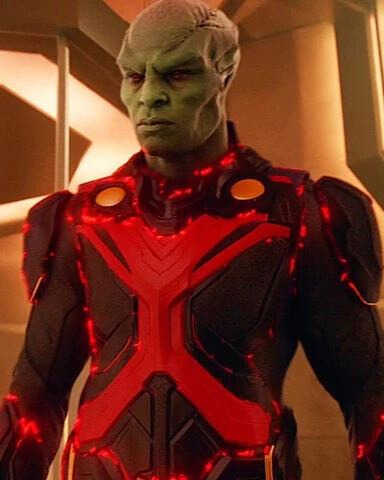

CAÇADOR DE MARTE / J'onn J'onzz
Caçador de Marte (Martian Manhunter no original) é um super-herói fictício de histórias em quadrinhos, que foi criado pela DC Comics. Ele apareceu pela primeira vez na história "The Strange Experiment of Dr. Erdel" em Detective Comics #225 (Novembro de 1955), escrita por Jack Miller e ilustrada por Joe Certa. J'onn J'onzz é um nativo de Marte, também conhecido como Ma'aleca'andra em sua língua nativa (uma referência a "Malacandra," o nome usado pelos habitantes de Marte na novela de C. S. Lewis, Além do Planeta Silencioso). No Brasil, durante muitos anos o personagem foi chamado de Ajax, o marciano. Em sua versão original, ou seja, o corpo que veio à Terra, e sua forma verdadeira, ele possui um corpo alto e magro. Sua cabeça é pontuda e fina com olhos vermelhos e pele verde. Nesta forma, ele se parece mais com um humano. Seu corpo apresenta o mesmo formato. Não possui cabelos e seu corpo ainda é verde. Usa geralmente uma sunga azul com uma capa da mesma cor e um "X" vermelho no peito. Em algumas versões mais modernas, seu corpo é todo coberto por um traje preto com o mesmo "X". J'onn também não era o último marciano de sua raça; ademais, ele tinha uma rivalidade com o General Blanx, um marciano que foi responsável pela destruição da atmosfera de Marte. Os marcianos conseguiram construir uma colônia chamada Novo Marte. Durante alguns anos, J'onn esteve fora da Terra, nesta colônia. Ele só participou da Liga em seus primeiros anos, e juntou-se de novo, como líder, numa fraca encarnação do grupo, pouco antes da Crise.